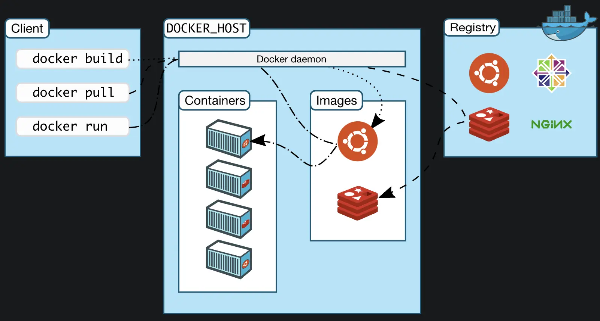
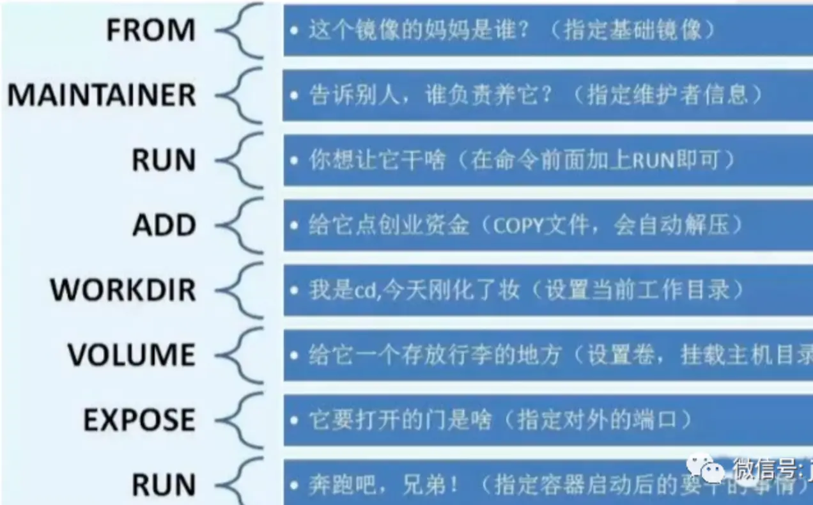
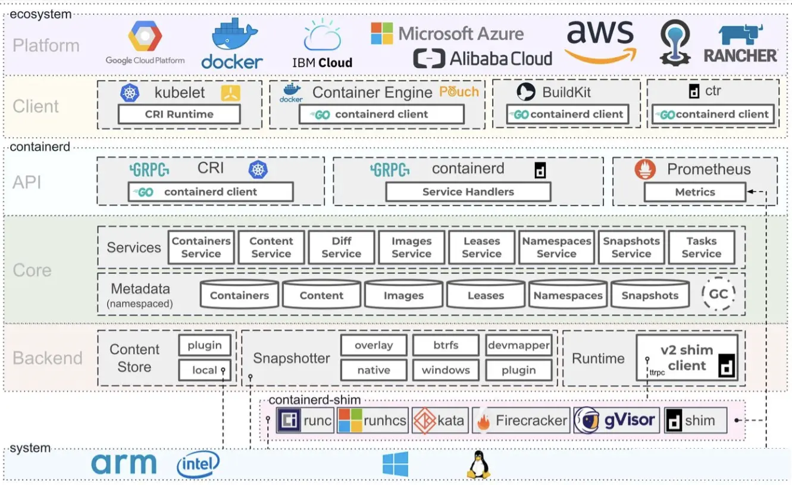

Docker
AI 导读一分钟导读，先掌握全文主干。
核心观点
- 覆盖安装、常用命令、容器/镜像/卷管理、私有 Registry 与 Jenkins/Rancher/GitLab 周边集成
- 多阶段构建与 minikube 单机 K8s 演练
- 命令快照偏 2021-2022（有注释标注），版本选型与安全台账看文末 2024-2026 更新
关键结论与取舍
- 老命令仍可用但注意新特性差异，生产环境按 2026 版本规划
- Docker 29 与 AI 平台演进（GPU 容器化）是当前主线

这篇是 Docker 实操笔记：安装、常用命令、容器 / 镜像 / 卷管理、私有 Registry 和 Jenkins / Rancher / GitLab 周边集成、多阶段构建与 minikube。命令快照偏 2021-2022 年（以注释标注），版本选型和安全台账请看文末「Docker 29 与 AI 平台演进（2024-2026 更新）」 。
-
The easiest and recommended way to get Docker Compose is to install Docker Desktop. Docker Desktop includes Docker Compose along with Docker Engine and Docker CLI which are Compose
-
Linux 服务器单独安装 docker，就需要单独安装 docker-compose。
dockerfile示意图

containerd示意图

podman集合-开源替代品
阿里云
# 安装docker引擎
yum install docker
# 开机启动
service docker start
# repos地址
vim /etc/docker/daemon.json
{
"registry-mirrors": ["https://docker.m.daocloud.io"],
"live-restore": true
}
# 注意:registry-mirrors 必须是数组（不是字符串）
# Docker 中国官方镜像站 docker-cn.com 已于 2024 年停止服务,上例为社区常用镜像源,可用性请自行确认
docker run -d -p 8090:80 docker/getting-started
# 容器日志物理目录
/var/lib/docker/containers/ID/ID-json.log
# 设置共享内存
docker run --shm-size 256m # 共享内存是 docker run 的参数,没有全局 --shm-size
# 安装 elasticsearch（命令为 2019 年前后的 7.5.2 版本示例;现值机生产环境用 8.x,语法差异见本站 elastic 页）
docker pull docker.elastic.co/elasticsearch/elasticsearch:7.5.2
# 启动 openjdk 内存空间有要求
docker run -p 9200:9200 -p 9300:9300 -e "discovery.type=single-node" docker.elastic.co/elasticsearch/elasticsearch:7.5.2
# 在linux至少8G,容易跑起来
# 需要继续 docker kibana rancher
# rancher 集群-多个项目,项目-多个命名空间
# rancher 主界面->右下角有个English，点击选择中文
# 单节点安装，重置密码
docker exec -ti <container_id> rancher reset-password
# 必须带上-v $HOME/rancher:/var/lib/rancher/,否则跑不起来
# 导致https://192.168.8.108:8091,https://127.0.0.1:8091(不能访问)
# rancher启动慢,需要等待片刻就能浏览器访问
# docker logs -f rancher查看容器启动日志
docker run -d --restart=unless-stopped -p 8090:80 -p 8091:443 --privileged -v $HOME/rancher:/var/lib/rancher/ rancher/rancher:latest
# 首次访问 https://127.0.0.1:8091,初始管理员密码在容器启动日志里,用下面命令查找:
# docker logs -f rancher | grep "Bootstrap Password"常用命令
所有 images 都压缩在 Docker.qcow2 里
#下载安装gerrit
docker pull gerritcodereview/gerrit
#运行gerrit
docker run -ti -p 8080:8080 -p 29418:29418 gerritcodereview/gerrit
#docker 安装(周编译,较新但可能bug)
docker pull jenkins/jenkins # 官方镜像 2022 年已迁至 jenkins/jenkins,jenkinsci/jenkins 已废弃
chown -R 1000:1000 /root/jenkins_home
docker run -d -p 8080:8080 --restart=always -v /root/jenkins_home:/var/jenkins_home --name jenkins jenkins/jenkins
# 帮助文档
https://www.w3cschool.cn/jenkins/jenkins-e7bo28ol.html
# 官方文档 https://www.jenkins.io/doc/
Blue Ocean值得安装
nohup mdbook serve >~/mdbook.nohup 2>&1 &
docker run --name some-mysql -v /my/own/datadir:/var/lib/mysql -e MYSQL_ROOT_PASSWORD=my-secret-pw -d mysql:tag
#安装gitlab,机器性能要好,否则卡死
docker pull gitlab/gitlab-ce
#gerrit是google开源的代码review工具
docker pull gerritcodereview/gerrit
docker run -ti -p 8080:8080 -p 29418:29418 gerritcodereview/gerrit
# http://localhost:8080
#SonarQube检测代码质量平台
docker pull sonarqube
# Create a tag TARGET_IMAGE that refers to SOURCE_IMAGE
docker tag SOURCE_IMAGE[:TAG] TARGET_IMAGE[:TAG]
# 查看image的产生过程,可以得到dockerfile
docker history --no-trunc alpinecontainer容器管理
#默认显示运行的容器
docker ps
#显示所有容器
docker ps -a
# attach模式, 类似运行于前台的进程，会占据本地的STDIN和STDOUT
docker run nginx
# detach模式,可以用docker container attach id改为attach模式,类似于后台运行
docker run -d nginx
# 与容器的交互
docker run -it id(container id) command 当command运行结束之后，container的状态也变成了exited的状态
docker exec -it id command 当command运行结束之后，container的状态保持running状态不变
docker stop $(docker ps -q)
#已经停止的，正在运行的不能删除
docker rm $(docker ps -a -q)image管理
# 注意:以下 help 输出是 2022 年前后版本的快照,具体子命令以 docker <cmd> --help 为准
# 注意images
docker images --help
Usage: docker images [OPTIONS] [REPOSITORY[:TAG]]
List images
Options:
-a, --all Show all images (default hides intermediate images)
--digests Show digests
-f, --filter filter Filter output based on conditions provided
--format string Pretty-print images using a Go template
--no-trunc Donot truncate output
-q, --quiet Only show image IDs
# 删除image为none
docker images|grep none|awk '{print $3 }'|xargs docker rmi
# 注意image
docker image --help
Usage: docker image COMMAND
Manage images
Commands:
build Build an image from a Dockerfile
history Show the history of an image
import Import the contents from a tarball to create a filesystem image
inspect Display detailed information on one or more images
load Load an image from a tar archive or STDIN
ls List images
prune Remove unused images
pull Pull an image or a repository from a registry
push Push an image or a repository to a registry
rm Remove one or more images
save Save one or more images to a tar archive (streamed to STDOUT by default)
tag Create a tag TARGET_IMAGE that refers to SOURCE_IMAGEvolume管理
docker volume --help
Usage: docker volume COMMAND
Manage volumes
Commands:
create Create a volume
inspect Display detailed information on one or more volumes
ls List volumes
prune Remove all unused local volumes
rm Remove one or more volumes其他命令
Management Commands:
builder Manage builds
buildx* Docker Buildx (Docker Inc., v0.8.1)
compose* Docker Compose (Docker Inc., v2.3.3)
config Manage Docker configs
container Manage containers
context Manage contexts
image Manage images
manifest Manage Docker image manifests and manifest lists
network Manage networks
node Manage Swarm nodes
plugin Manage plugins
scan* Docker Scan (Docker Inc., v0.17.0)
secret Manage Docker secrets
service Manage services
stack Manage Docker stacks
swarm Manage Swarm
system Manage Docker
trust Manage trust on Docker images
volume Manage volumes私有部署dockerhub
# 利用docker公司提供的工具
docker pull registry
# -v 主机目录:容器目录,registry存储仓库中镜像到/var/lib/registry
docker run -d -p 5000:5000 --restart=always -v /opt/dockerhub:/var/lib/registry registry
# 从dockerhub拉取nginx最新版
docker pull nginx
# 打上特定hub的标签
docker tag nginx localhost:5000/nginx
# 推送nginx到目标hub中去
docker push localhost:5000/nginx
# http://主机ip:5000/v2/_catalog 查看信息
# 增加配置,docker默认走https，但是registry默认走http /etc/docker/daemon.json
"insecure-registries":[
"主机:5000"
]jenkins 另一个开源替代品gocd
-
忘记密码——admin 密码未更改的情况
- cat ~/.jenkins/secrets/initialAdminPassword 就是初始化密码
- 访问 jenkins 页面，输入管理员 admin 和刚才的密码；
- 进去后可以更改其他管理员密码；
-
brew 启动不了
# Bootstrap failed: 5: Input/output error
# Error: Failure while executing; `/bin/launchctl bootstrap gui/503 /Users/zzi/Library/LaunchAgents/homebrew.mxcl.jenkins-lts.plist` exited with 5.
# 试试
brew services restart jenkins-lts- SSH remote hosts 配置里 Pty 一定不能勾选，否则 nohup 需要 sleep 才有效
- 证书统一管理各种，包括 ssh、gitlab 等等。
- Multijob 插件已过时，批量构建改用 Pipeline 的 parallel step（配合 Blue Ocean 用）就行
- Multiple SCMs 用来处理多个 git / svn 仓库构建一个项目
遇到问题
- Docker 拉取镜像时出现 Error response from daemon: Get https://registry-1.docker.io/v2/ : net/http: TLS handshake timeout 问题
"registry-mirrors": ["https://bytkgxyr.mirror.aliyuncs.com","https://registry.docker-cn.com","http://hub-mirror.c.163.com"]golang示例
docker 新版本引入多阶段，主要用来优化不同阶段的要求差异，比如编译时需要编译工具，但运行时不需要。运行时只要引入编译产物就行。
# syntax=docker/dockerfile:1
## Build
FROM golang:1.16-buster AS build # 官方教程示例期的版本,现值机用 golang:1.26+
WORKDIR /app
COPY go.mod ./
COPY go.sum ./
RUN go mod download
COPY *.go ./
RUN go build -o /docker-gs-ping
## Deploy
FROM gcr.io/distroless/base-debian10
WORKDIR /
COPY --from=build /docker-gs-ping /docker-gs-ping
EXPOSE 8080
USER nonroot:nonroot
ENTRYPOINT ["/docker-gs-ping"]docker build -t docker-gs-ping:multistage -f Dockerfile.multistage .python示例
# syntax=docker/dockerfile:1
FROM python:3.8-slim-buster # Python 3.8 已于 2024-10 EOL,现值机用 python:3.13-slim
WORKDIR /app
COPY requirements.txt requirements.txt
RUN pip3 install -r requirements.txt
COPY . .
CMD [ "python3", "-m" , "flask", "run", "--host=0.0.0.0"]docker tag python-docker:latest python-docker:v1.0.0minikube-单机版精简k8s
你可以用 kubectl 命令行工具来启用 Dashboard 访问 kubectl 会让 Dashboard 可以通过 http://localhost:8001/api/v1/namespaces/kubernetes-dashboard/services/http:kubernetes-dashboard:/proxy/ 访问。
kubectl proxyDocker 29 与 AI 平台演进（2024-2026 更新）
版本现状（2026-08）
Docker Engine 29 于 2025-11-10 发布，成为当前稳定主线，维护到最新 29.7.2 （2026-08-05）；28.x 已于 2026-05-13 停止安全支持，25.0.x 维护到 2026-12-04。生产环境建议尽快落到 29.x。
| 版本线 | 发布时间 | 状态 |
|---|---|---|
| 29.x | 2025-11-10 | 当前稳定（29.7.2 @ 2026-08） |
| 28.x | 2025-02-20 | 2026-05-13 已停止支持 |
| 25.0.x | 2024-01 | 维护至 2026-12-04 |
2024-2026 特性盘点
- Docker Desktop 4.77（2026-06-08）：内置 Engine 29.5.3、Buildx 0.34.1，Logs 视图支持导出。
- Docker Agent / MCP Gateway：官方 AI 助手和 MCP 网关随 Desktop 持续更新，容器操作可以被 AI 代理编排。
- 外部服务（External Services）：Compose 里可以引用外部服务（比如云数据库）。
- 镜像卷（volume.type=image）：用镜像作为卷内容源，适合数据库初始化。
- 静默模式：
--quiet和--quiet-build选项，适合 CI/CD。 - 多架构构建：
docker compose build --platform linux/amd64,linux/arm64。 - Model Runner：Desktop 内置的 AI 模型运行能力持续增强，本地 LLM 推理进入容器生态。
- containerd 集成：Docker Engine 可以直接用 containerd 作为运行时。
安全与供应链（2025-2026）
dockerd] D --> CC[containerd] CC --> R[runc] R --> K[Linux Kernel
namespaces + cgroups] end subgraph Image Layer L1[基础镜像层] --> L2[依赖层] --> L3[应用代码层] --> L4[配置层] end style D fill:#2496ed,stroke:#fff,color:#fff style K fill:#fbb,stroke:#333
- CVE-2026-41567：docker cp 上传压缩归档时，守护进程从容器文件系统解析解压二进制（xz / unpigz），恶意镜像可以借此逃逸到宿主机 root；修复于 29.5.1 和 moby v2.0.0-beta.14。
- CVE-2026-41568：docker cp 挂载竞态，恶意容器可以在宿主机任意路径创建文件；29.5.1 修复。
- 供应链可信：基础镜像签名、内容校验和「镜像来源可审计」被列为官方重点方向。
AI 时代的 Docker（2026）
- AI Agent 运行时安全治理：官方把「AI 代理操作的容器怎么做到安全、可审计」列为核心议题。
- 软件供应链与基础镜像可信：镜像签名、内容校验成为产品化能力。
- 本地开发环境可审计可控：开发环境即代码，治理能力下沉到本地。
- 整体观察：Docker 正从「容器工具」走向「AI 开发时代的运行平台」。
Docker Compose v2（已替代 v1）
Docker Compose v2 用 Go 重写，已经成为默认的 compose 工具（命令为 docker compose ，不再是 docker-compose ）。截至 2026 年最新版本是 v2.37+。
# docker-compose.yml（v2 格式，无需 version 字段）
services:
web:
image: nginx:alpine
ports:
- "8080:80"
depends_on:
- api
healthcheck:
test: ["CMD", "curl", "-f", "http://localhost"]
interval: 30s
timeout: 10s
retries: 3
api:
build:
context: ./api
dockerfile: Dockerfile
environment:
- DB_HOST=db
deploy:
replicas: 3
resources:
limits:
cpus: '1.0'
memory: 512M
db:
image: postgres:16
volumes:
- db_data:/var/lib/postgresql/data
environment:
POSTGRES_PASSWORD: secret
volumes:
db_data:Bake 构建引擎（v2.37+ 默认启用）
Bake 是 Docker 的新型构建引擎，支持并行构建、多目标构建和优化缓存：
# Bake 并行构建多个服务
docker compose build --print # 输出等效 Bakefile
docker compose build --platform linux/amd64,linux/arm64 # 多架构构建
# 直接使用 bake
docker buildx bake web api db # 并行构建三个目标BuildKit / buildx
BuildKit 是 Docker 的新一代构建引擎，支持并行构建、缓存挂载和密钥管理：
# Dockerfile with BuildKit features
# syntax=docker/dockerfile:1.7
FROM golang:1.26 AS builder
# 缓存挂载 - 加速依赖下载
RUN --mount=type=cache,target=/go/pkg/mod --mount=type=cache,target=/root/.cache/go-build go build -o /app ./...
# 密钥挂载 - 安全使用私有仓库
RUN --mount=type=secret,id=npmrc,target=/root/.npmrc npm install
FROM alpine:3.20
COPY --from=builder /app /app
ENTRYPOINT ["/app"]现代替代方案
| 工具 | 特点 | 适用场景 |
|---|---|---|
| Podman | 无守护进程、Rootless | 安全敏感环境 |
| containerd | 轻量运行时 | K8s 节点 |
| Kaniko | K8s 内构建镜像 | CI/CD 流水线 |
| Buildah | 脚本化构建 | 无 Dockerfile 构建 |